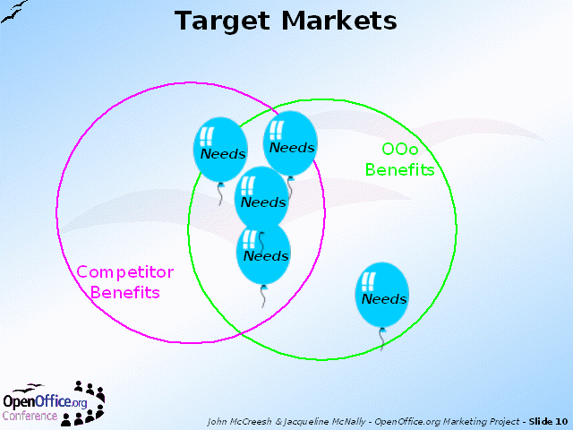

Notes:
A market is a group of users with similar needs. By matching OpenOffice.org's benefits to market needs we can see how well we serve a market.
Doing the same exercise for competitive products shows which markets we serve better than our competitors. These are potential target markets.
For example,
let's assume the Competitor on the slide is taken as MS-Office
the the balloon on the bottom right of the slide represents Linux users who require a comprehensive office product
the the diagram shows only OpenOffice.org will meet their needs
Commercial companies also require a market to be potentially profitable before it becomes a target market. OpenOffice.org does not necessarily suffer from this limitation. For example, there is no reason why OpenOffice.org should not be localised into a language with a very small number of speakers, provided there are willing and able volunteers to do the work.